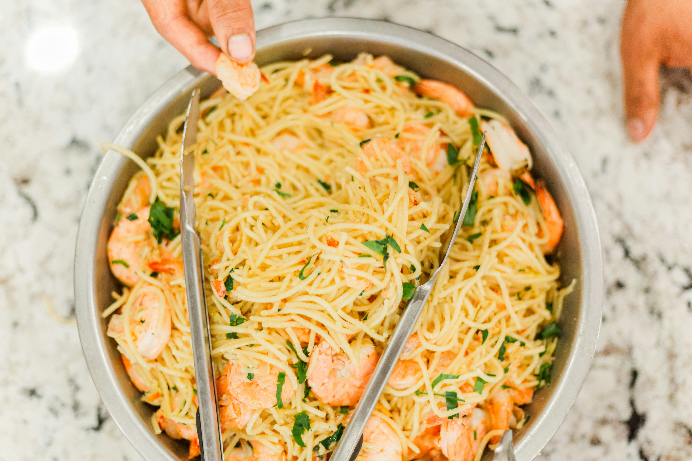

Shrimp Pasta

This is a simple recipe for cooking a delicious bowl of shrimp pasta.
Ingredients
- 8 ounces pasta (spaghetti, fettuccine, or your choice)
- 1 pound shrimp, peeled and deveined
- 2 tablespoons olive oil
- 3 cloves garlic, minced
- 1/2 cup heavy cream
- 1/4 cup grated Parmesan cheese
- Salt and pepper to taste
- Fresh parsley, chopped (optional)
Steps
- Cook the pasta according to the package instructions until al dente. Drain and set aside.
- In a large skillet, heat the olive oil over medium heat. Add the minced garlic and sauté for about 1 minute until fragrant.
- Add the shrimp to the skillet. Cook for about 2-3 minutes on each side until they turn pink and opaque. Remove the shrimp from the skillet and set aside.
- In the same skillet, reduce the heat to low and add the heavy cream. Stir in the grated Parmesan cheese until the sauce is smooth and creamy. Season with salt and pepper to taste.
- Add the cooked pasta and shrimp back into the skillet. Toss everything together until well coated with the sauce.
- Cook for an additional 1-2 minutes to heat everything through.
- Garnish with chopped fresh parsley if desired. Serve immediately and enjoy your delicious shrimp pasta!
Home